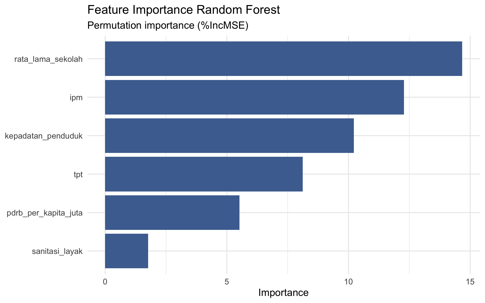

Gabungkan dan validasi
Tujuh CSV BPS digabung menurut nama wilayah. Pipeline memeriksa 38 baris, nilai hilang, wilayah duplikat, dan rentang target.
Studi kasus · Jawa Timur · 2023
Model prediksi persentase penduduk miskin pada 38 kabupaten/kota, menggunakan enam indikator BPS. Regresi Linear dan Random Forest dibandingkan melalui validasi silang dengan tuning terpisah.
01 / Pertanyaan dan data
Targetnya adalah persentase penduduk miskin pada Maret 2023, bukan garis kemiskinan dalam rupiah. Setiap observasi mewakili satu kabupaten atau kota di Jawa Timur.
Data mentah dari tujuh tabel BPS digabung berdasarkan wilayah. PDRB per kapita dikonversi dari ribu menjadi juta rupiah sebelum pemodelan.
Definisi, satuan, serta tautan sumber resmi tiap variabel tersedia dalam README repositori.
02 / Evaluasi
Nested cross-validation memisahkan pemilihan parameter pada fold dalam dari penilaian pada fold luar. Baseline selalu memakai rerata target pada data latih fold tersebut.
| Model · nested CV | RMSE ↓ | MAE ↓ | R² ↑ |
|---|---|---|---|
| Rerata data latih | 4,286 | 3,326 | −0,010 |
| Regresi Linear | 3,306 | 2,525 | 0,399 |
| Random Forest | 2,674 | 2,137 | 0,607 |
RMSE dan MAE dalam poin persentase. Angka berasal dari nested_cv_summary.csv; hasil ini adalah estimasi internal, bukan uji pada tahun lain.
03 / Grafik proyek
Grafik berikut adalah artefak analisis yang tersimpan di repositori. Grafik evaluasi berasal dari repeated 5-fold CV × 10; nilainya berbeda dari tabel nested CV di atas.



04 / Alur kerja
Tujuh CSV BPS digabung menurut nama wilayah. Pipeline memeriksa 38 baris, nilai hilang, wilayah duplikat, dan rentang target.
Regresi Linear menjadi pembanding; Random Forest memakai 500 pohon dengan pencarian mtry dari 2 sampai 6.
Nested CV menggunakan 5 fold luar dan 3 fold dalam. Repeated CV × 10 tersedia sebagai analisis awal dan sumber grafik.
Batas interpretasi
Hanya 38 observasi dan satu tahun data yang digunakan. Belum ada pengujian eksternal lintas waktu atau validasi spasial. Indikator yang saling berkaitan, seperti IPM dan lama sekolah, membuat interpretasi pengaruh masing-masing variabel perlu hati-hati.
Seluruh kode, data snapshot, laporan R Markdown, dan tabel evaluasi tersedia di repositori proyek ↗.